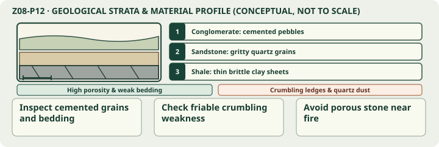

Z08-P12 · Rocks, minerals and materials · New manuscript
Sedimentary Rock Class Screening: Sandstone, Shale and Conglomerate
Identify clastic sedimentary rocks by grain rounding, bedding, and cementation while noting permeability and crumbling hazards.
When it applies · River valleys, roadcut observation from safe shoulders, and bluff trails.
Equipment · 10x hand lens, steel nail, metric scale.

Actions
- Recognize clastic sedimentary rocks by visible cemented sand grains, rounded pebbles, or flat thin clay-silt laminations along bedding planes.[R03, R16]
- Check cementation gently without dry grinding; poorly cemented sandstone crumbles readily and releases respirable quartz dust.[R06, R16]
- Exclude porous sandstone and layered shale from fire enclosures and load-bearing supports because trapped water and bedding planes split under heat or load.[R13, R16]
Failure recognition · Building hearth walls from damp sandstone or trusting fissile shale ledges underfoot leads to sudden spalling, dust inhalation, and slips.[R06, R13, R16]
Verify · Grain size, bedding orientation, and crumbling or porosity cautions are recorded without dry abrasion.[R03, R06, R16]
Stop or change course · Stop hammering friable sandstone or climbing layered shale banks where loose slabs detach easily.[R06, R16]
Evidence and editorial notes
- R03 · USGS · Collecting Rocks: Rock Classes and Mineral Property Basics (USGS GIP)
- Section: Igneous, sedimentary, and metamorphic rock classes · Conditions: Field rock class screening without laboratory petrography
Support: Observable grain interlocking, layering, bedding, or foliation helps separate broad rock classes.
Limitations: Weathered rinds and fine-grained dark rocks frequently mimic other classes visually; hand-lens inspection is preliminary only. · Conflicting evidence: None noted.
Editorial note: Establishes non-destructive classification limits. · Specialist reviewer: Field geologist
Primary source · checked 2026-11-25 - R06 · NIOSH / CDC · Crystalline Silica Respiratory Dust Hazards (2024)
- Section: Overview; Exposure · Conditions: Silica-bearing material disturbed by cutting, grinding, or similar dust-producing work
Support: Respirable crystalline silica exposure can cause silicosis and other disease. Avoid creating dust during field recognition.
Limitations: Hazardous particles may be invisible. Wind, casual wetting and a mask alone do not establish exposure control. · Conflicting evidence: Conditions are recorded in the A03 audit.
Editorial note: Mandatory Z08 silica/eye safety gate. · Specialist reviewer: Industrial hygienist and geologist
Primary source · checked 2026-11-25 - R13 · National Park Service · Rocks and Minerals Geological Overview (Current web edition)
- Section: Rocks and Minerals overview · Conditions: Unrated stones near a fire or during thermal cycling
Support: Use agency-approved fire facilities and keep people away from cracking or shifting material.
Limitations: Editorial avoidance. The cited geology overview does not establish a safe rock type, moisture test or heating threshold. · Conflicting evidence: Conditions are recorded in the A03 audit.
Editorial note: Reinforces Z03/Z08 wet-rock spalling stop. · Specialist reviewer: Geologist and fire safety reviewer
Primary source · checked 2026-11-25 - R16 · Minnesota DNR · Rocks and Minerals of Minnesota Educational Guide (Current web edition)
- Section: Sedimentary limestone, sandstone, and shale permeability · Conditions: Southeastern Minnesota karst, bluff, and river-valley sedimentary strata
Support: Sandstone, limestone, and shale differ sharply in cementation, porosity, and fissility, governing weathering and cliff instability.
Limitations: Karst bluffs and fractured shales shed rockfall unpredictably; visual inspection cannot certify slope or load stability. · Conflicting evidence: None noted.
Editorial note: Covers Upper Midwest sedimentary rock hazards. · Specialist reviewer: Engineering geologist
Primary source · checked 2026-11-25
Source lineage · New manuscript (Z08 P16 rock classes) · Classification · New manuscript.